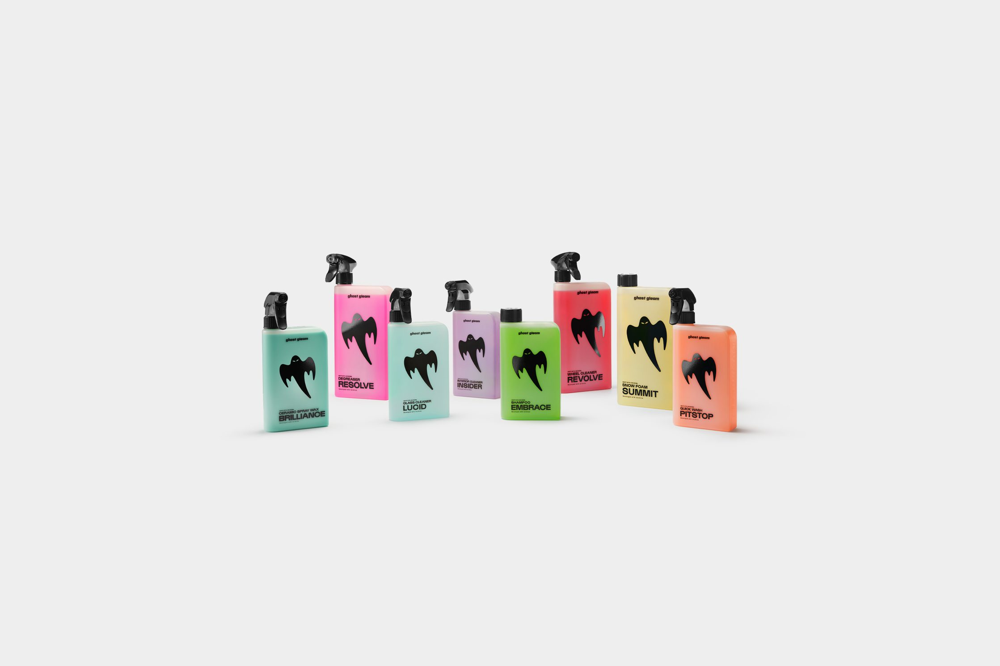

Bestsellers

Brillo Fantasma
Descubre la línea “Ghost”, inspirada en la velocidad, la precisión y el diseño escandinavo minimalista.
El show debe continuar
Explora cómo Koenigsegg continúa redefiniendo la ingeniería automotriz con cada nueva creación.